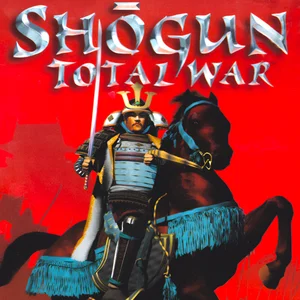

Mejores titulos de estrategia de los 2000
Age of empires 2

Sin duda alguna, la saga Age of Empires se puede considerar el clásico por excelencia de los juegos estratégicos en tiempo real. Desde el primer título hasta éste,han mantenido una altísima calidad, jugabilidad,interfaz de juego muy intuitiva y una gran diversión.
Shogun total war
Ponte en el papel de un comandante japones en la epoca de los samurais, dirige a tú ejercito hacia la victoria controlando cada soldado de tu ejercito. Vista 360º, gran detalle, increible ambientación, elevada IA.